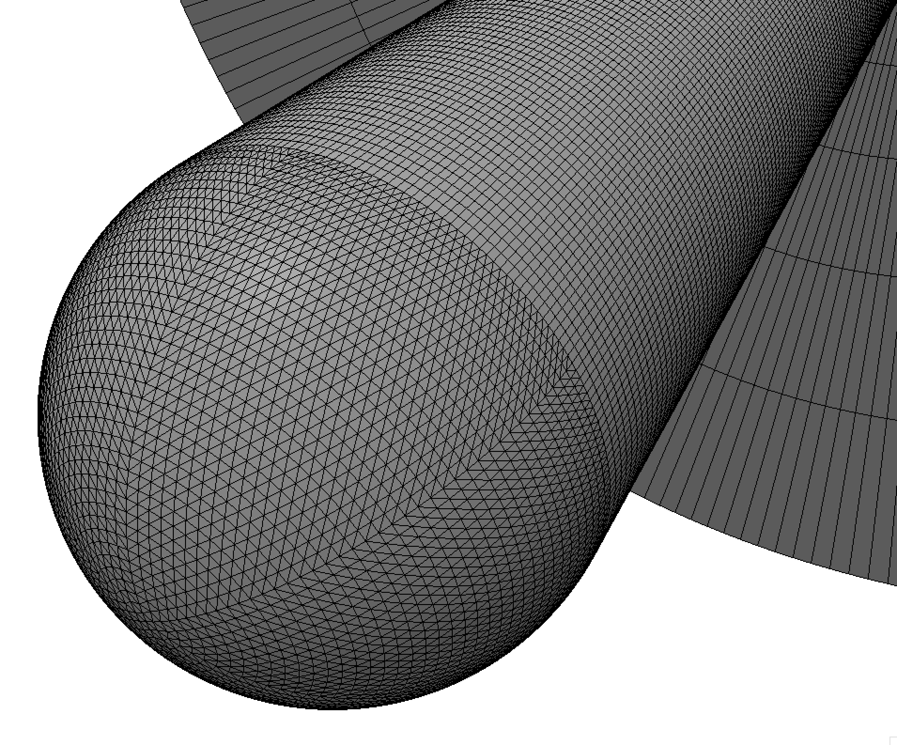

Public Access (formerly Langley Research Center)Turbulence Modeling Resource |
Return to: Numerical Analysis of 3D Hemisphere Cylinder Validation Case Intro Page
Return to: Turbulence Modeling Resource Home Page
TURBULENCE MODEL NUMERICAL ANALYSIS
Grids - 3D Hemisphere Cylinder
The methodology to create
a series of grids is provided. Both structured and
unstructured grids are provided (unlike most others on the Turbulence Modeling Resource website,
they are completely independent of one another).
The coordinate system is defined with x streamwise, y horizontal, and
z vertical.
STRUCTURED VERSIONS OF GRIDS
For the structured grids,
each grid is a PLOT3D unformatted file of size ni x nj x nk, where
ni is
the number of points along the body, nj
is the number of points in the normal direction, and nk is
the number of points in the circumferential direction.
The grids range from 161 x 289 x 129 (finest half-plane grid) to 6 x 10
x 5 (coarsest half-plane grid). The constructed grids are not
necessarily nested grids but coarser grids can be constructed
by extracting every-other-point in all directions (i.e.,
regular refinement).
The farfield boundaries are located approximately 20 unit lengths from the body.
The figure below shows a view of the level 4 structured half-plane grid of size ni=21 x nj=37 x nk=17 in
the streamwise x normal x circumferential directions.
Note: be sure to use double precision when reading (or writing) the grids!
PLOT3D Files
A FORTRAN program for structured grids
is provided that can be used to generate the structured grids in PLOT3D format. All information has been hardwired
into the program except three integer inputs.
The second input is integer,
between 0 and 2 and indicates the type of grid to be generated (0 is inviscid, 1 is laminar, and 2 is turbulent).
Use "2".
The third input is integer, between 1 and 2 and indicates the type of grid to be generated (1 is 2D, 2 is 3D with symmetry in y,
3 (which does not work correctly) is 3D without symmetry in y). Use "2" to create a 3-D half-plane grid like that shown in the first figure above.
The half-plane grid sizes are as follows:
Neutral Map Files
associated with each grid are also generated by the above program (these files specify grid indices associated
with each boundary condition - see
The Neutral Map File). The following is
an example neutral map file:
UNSTRUCTURED VERSIONS OF GRIDS
The unstructured grids are created independently of the structured grids. In these grids,
the farfield boundaries are located approximately 10 unilt lengths from the body.
A picture of the unstructured mixed-element prisms/hexes grid is shown in the figure below.

UGRID Files
A FORTRAN program for unstructured grids
(modified on 10/07/2015, only a minor bug compared to V24 from 10/02)
is provided that can be used to generate unstructured grids in UGRID format. All information has been hardwired
into the program except 8 inputs.
The input values to generate the finest mixed prisms/hexes grid are given in
hemisphere_cylinder_finest.inp.
Below is a description of input parameters with the finest-grid value in parenthesis:
Return to: Numerical Analysis of 3D Hemisphere Cylinder Validation Case Intro Page Return to: Turbulence Modeling Resource Home Page
Recent significant updates:
The first input is integer, between 1 and 6 indicating the level of the
grid to be generated (finest to coarsest).
01/27/2017 - removed link to coarser versions of UGRID files
Page Curators: Christopher Rumsey,
Ethan Vogel,
Clark Pederson
Last Updated: 05/13/2019